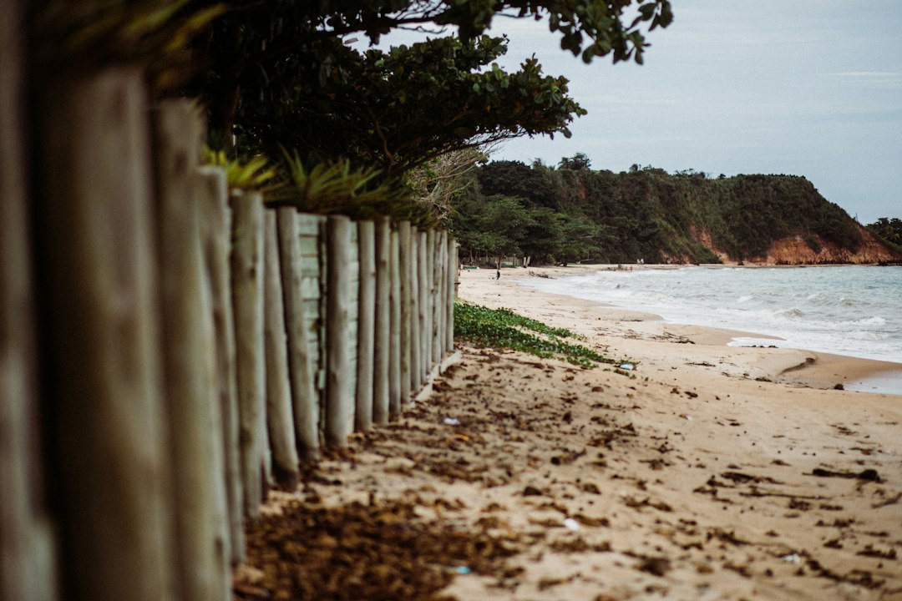

A practical retaining wall decision on the Sunshine Coast starts with height, length, what sits above the wall and the ground type. The published guide names 8 wall categories, 15 localities, 24 common questions, approval attention for most walls, a 1 metre engineering trigger where surcharge or height applies, and Sunshine Coast Council concurrence for walls over 2 metres. Drainage, face area and certification shape the quote more than material alone.
For homeowners comparing retaining walls sunshine coast options, the useful starting point is not a material preference, but the wall height, face area, ground condition and approval pathway.
Retaining Walls Sunshine Coast Explained
Retaining Wall Sunshine Coast frames the decision around height, length, what sits above the wall and the suburb or postcode. That order is useful because the same visual job can behave very differently on Blackall Range ground, Buderim volcanic soil, Landsborough sandstone or coastal dune sand.
A low garden terrace may only need a simple material conversation. A wall carrying a driveway, building load, fence, pool area or another retained level needs a more careful scope. The published guide treats drainage as a structural detail, with ag drain, aggregate and geofabric discussed before the finish is chosen.
Before asking for a price, write down the measurable facts: wall height, wall length, whether the wall is new or a replacement, the visible failure signs if any, access for machinery and what is above and below the wall. That gives a contractor enough information to separate a basic garden wall from an engineered retaining wall pathway.
How face area changes the cost conversation
The published guide prices retaining work by square metre of wall face, not by a loose lineal metre. Its example is a wall 1.2 metres high and 10 metres long, which creates 12 square metres of wall face. A taller wall can also change excavation, post depth, drainage, engineering and material quantities.
Only the price bands visible in the published text should be treated as indicative: rock and boulder walls are shown from around $150 to $300 per square metre, while timber sleeper walls are shown from $300 to $450 per square metre. Other materials may appear in the full calculator or quote process, but they should not be assumed from those two examples.
Useful quote questions include:
- Is the price based on wall face area, lineal metres or a site inspection?
- Does the scope include removal of the existing wall if it is a replacement?
- Is drainage included as ag drain, aggregate and geofabric behind the wall?
- Will engineering, Form 15, Form 16 or council approval be required?
Material choice follows ground, height and drainage
The guide names concrete sleeper, timber sleeper, besser block, rock, gabion, drainage, engineered work and repairs as the main paths. Concrete sleeper walls between galvanised posts are described as common for replacement work across cut-and-fill blocks. Timber sleeper terraces still have a place on low garden falls.
Besser block is described for taller, rendered and engineered jobs. Rock walls are presented as suited to acreage where the wall can be battered back into the slope, while gabion baskets are described for scour and surface runoff on erodible ground. These are not interchangeable design labels, because access, backfill, drainage and available room behind the face change the outcome.
A helpful companion resource is this Sunshine Coast retaining wall planning guide, which keeps the same subject focused on early project checks rather than assuming one wall type is automatically best.
Approval and engineering checks before work starts
The published source states that Sunshine Coast Council requires a building permit before construction, modification or repair of most retaining walls, and that council concurrence is needed for walls over 2 metres. It also describes structural retaining walls as Class 10b structures designed to AS 4678 when the engineered pathway applies.
The guide links taller or loaded walls with RPEQ certification, including Form 15 for design and Form 16 on inspection. It also says licensing is triggered by the value of building work, not the height of the wall. Those details make approval a front-end question, not something to resolve after a quote is accepted.
For retaining walls on Sunshine Coast sites, the owner should ask which approval assumption has been made, what evidence supports it and whether the contractor is pricing the wall as exempt, permit ready or engineered. If the answer depends on height, surcharge or boundary conditions, the quote should say so plainly.
Who this applies to
This guide is most useful for owners comparing a new wall, a replacement wall or a repair where the ground is already moving, bulging, cracking or difficult to use. It also suits buyers reviewing a property with an existing wall, because drainage and approval history can affect what questions should be asked before settlement or renovation planning.
It is less useful for purely decorative edging with no meaningful retained load, although the same measuring habit still helps. The key audience is anyone who needs to decide whether they are pricing a simple landscape item, a drainage repair, or a structural retaining wall that may need design and certification.
Sunshine Coast conditions vary enough that locality should be used as evidence, not decoration. The source contrasts a wall on the Blackall Range at Maleny with a wall on canal fill at Maroochydore, and separately identifies Buderim volcanic soil among the ground types that behave differently. Describe the ground, water movement and access in the enquiry rather than relying on suburb name alone.
- Measure the wall. Record height and length so the quote can be assessed by wall face area.
- Describe the load. Note what sits above the wall, including fences, driveways, structures or another retained level.
- Check drainage. Ask whether ag drain, aggregate and geofabric are included in the scope.
- Confirm approvals. Ask whether the wall is being treated as exempt, permit ready or engineered.
- Compare like for like. Only compare quotes after demolition, drainage, engineering and certification assumptions are visible.
| Situation | Likely focus | Question to ask |
|---|---|---|
| Low garden fall | Material, drainage and access | Is this a landscape wall or a structural retaining wall? |
| Replacement wall | Failure cause and removal scope | Is drainage included behind the new wall? |
| Taller or loaded wall | Engineering and approval pathway | Will AS 4678, Form 15 or Form 16 be required? |
| Erodible or runoff prone ground | Free draining structure and surface water | Is a gabion, rock or other drainage led solution being considered? |
Common questions
Is a retaining wall priced by metre or by area? The published guide explains that cost is considered by square metre of wall face. A 1.2 metre high wall that is 10 metres long is 12 square metres of wall face.
When does engineering become part of the discussion? The guide links walls over 1 metre or walls carrying surcharge with AS 4678 design and RPEQ certification. It also names Form 15 for design and Form 16 for inspection where the engineered pathway applies.
Does every wall type need drainage behind it? The published guide treats subsoil drainage as part of every wall scope discussed. It names ag drain, gravel and geofabric as the drainage detail behind the wall.
Can suburb alone decide the right wall type? No. The published guide uses locality to point to ground differences, including range ground, volcanic soil, sandstone and coastal dune sand, but the decision still depends on height, load, access and drainage.
This guide covers practical wall type, drainage, cost and approval questions for Sunshine Coast retaining wall projects.